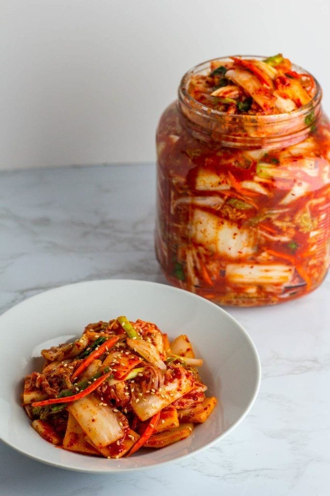
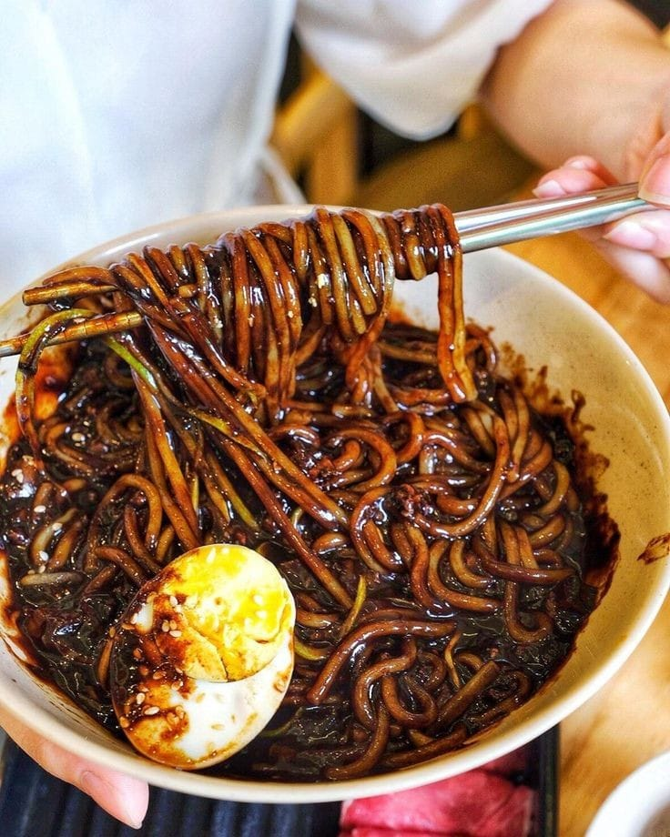
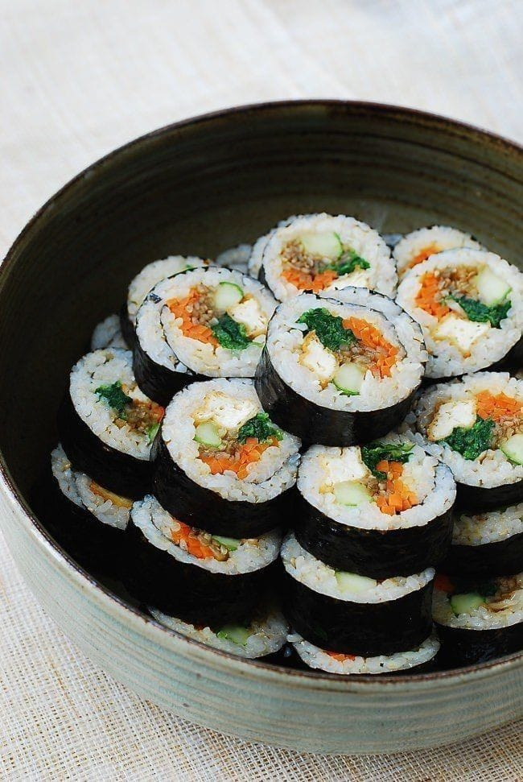

A comida da Coreia do Sul conta um pouco da história desse país asiático que transita com imensa fluidez entre o tradicional e o moderno.
Menos conhecida que outras gastronomias orientais, como a japonesa, a chinesa e até a tailandesa, a culinária sul-coreana vem, aos poucos, se popularizando fora do continente e ganhando adeptos apaixonados.
o que os coreanos comem?
A comida típica da Coreia do Sul tem várias “caras”: os sabores variam entre o suave e o acentuado, do arroz à pimenta, incluindo combinações agridoces que oferecem uma explosão de sabor a cada mordida.
O kimchi está entre os pratos mais conhecidos, mas é impossível mergulhar na gastronomia local sem explorar os sabores fortes do hongeo, a suavidade do kalguksu ou o popular gulbi.
5 comidas típicas da Coreia do Sul:
1.tteokbokki
De todos os ingredientes da culinária coreana, o arroz é o principal e é usado de diversas formas.
Uma dela é o tteokbokki, uma sopa feita com bolinhos de arroz cilíndricos, pimenta, ovos cozidos e cebolinha e uma das tradicionais comidas típicas da Coreia.A aparência lembra o nhoque italiano, mas o gosto é bem diferente, pois é bastante apimentado.
2.samgyeopsal
O samgyeopsal é uma das partes do porco mais caras na Coreia do Sul devido à popularidade do prato.
Seu nome significa “três camadas de carne”. O samgyeopsal é feito da barriga do porco cortada em finas fatias cozidas sem tempero e assadas na mesa.
Por ser uma refeição um pouco cara para o bolso do coreano, acaba sendo consumida em ocasiões especiais.O prato vem servido com alface, alho cru e outros acompanhamentos como folhas de perilla, pimenta verde, cebola, cenoura e kimchi.
Assim como a maioria dos pratos coreanos tradicionais, também é servido com uma porção de arroz e uma sopa.
3.kimchi
A grande maioria dos pratos servidos em restaurantes de culinária coreana virão acompanhados deste que é como o arroz e feijão do brasileiro: está em todas!O kimchi, que não ia ficar de fora da lista de comidas típicas da Coreia.
O kimchi é o resultado da mistura de acelga, pasta de pimenta e condimentos, como gengibre e alho. Todo coreano que se preze tem kimchi estocado no freezer de casa. O preparo do kimchi é uma tradição familiar onde todos os membros se unem.
<4.jjajjangmyun
Chamado de um dos “pratos nacionais da Coreia”, o jjajjangmyun é de origem chinesa. A versão coreana foi criada na cidade de Incheon, próxima a Seul, em 1905 no restaurante Gonghwachun. Mesmo não tendo sido originado inicialmente no país, hoje é uma das principais comidas típicas da Coreia.
Feito com lámen e pasta de feijão de soja preto, o prato tornou-se uma espécie de fast food coreano, a refeição mais vendida por delivery, já que é barata e simples de preparar.
5.kimbap
Envoltos em gim, estão o arroz, os legumes, ovo e algum tipo de carne, servidos em fatias um pouco maiores do que a do sushi.
Pela semelhança com o sushi, existe até uma polêmica a respeito do surgimento do prato. Alguns dizem que é derivado do norimaki, uma espécie de sushi introduzida na Coreia durante a ocupação japonesa.Outros dizem que o prato foi desenvolvido simplesmente da tradição de enrolar o bap (arroz cozido) e o banchan (acompanhamentos) em algas comestíveis.